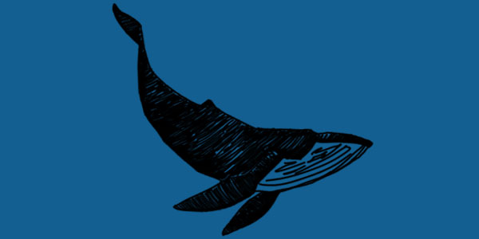

s_nking
do you see me the way I see you?
can you hear me? am I coming through?
keep me breathing when I'm feeling blue
am I sinking into you?
she oversees over seas
pressure eat me, sinking yellow submarine
let it go or get dragged below her
ｒｅｔｕｒｎ
<
>